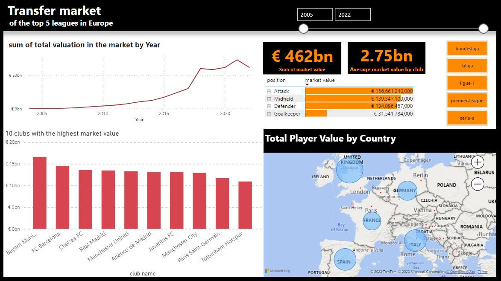
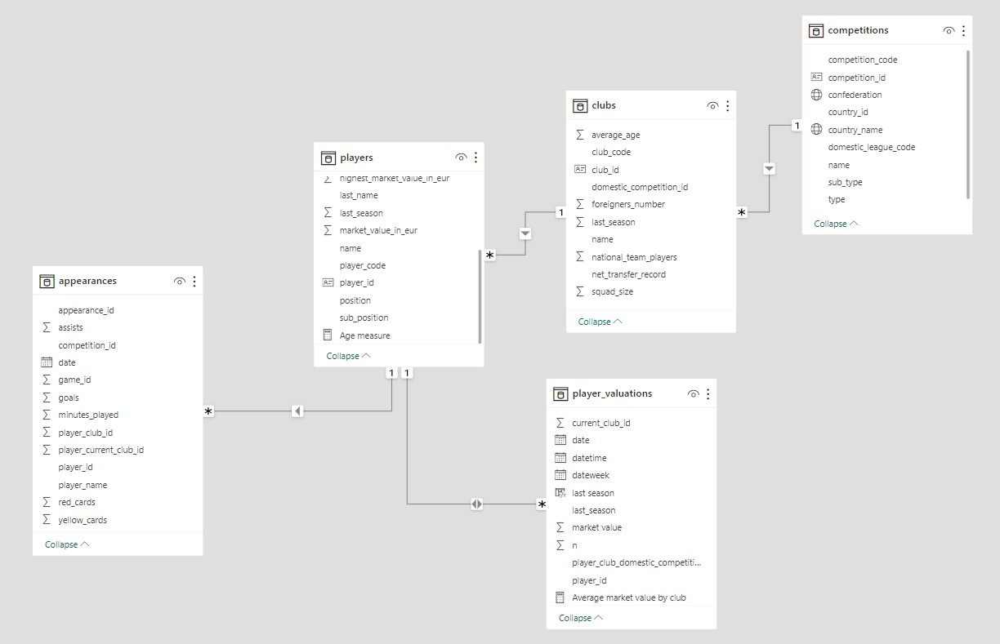
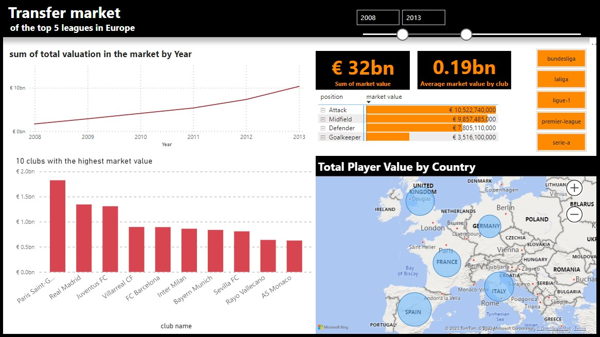
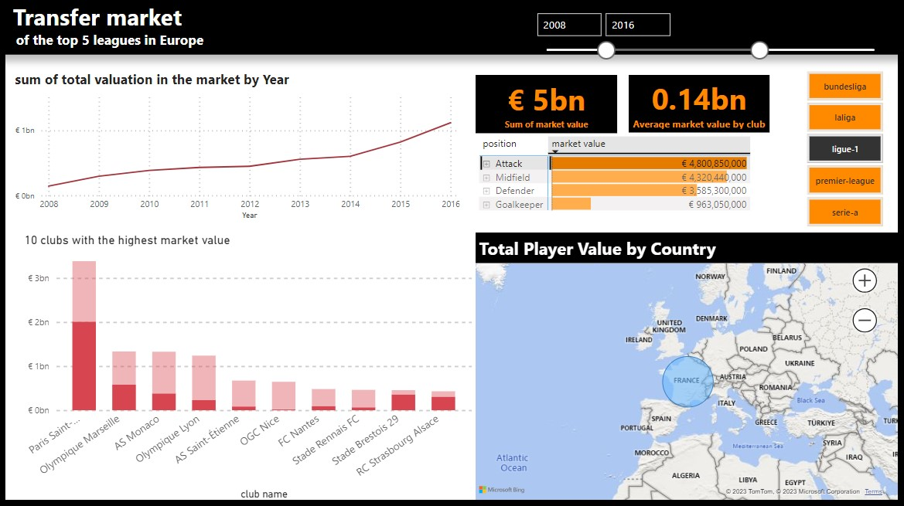
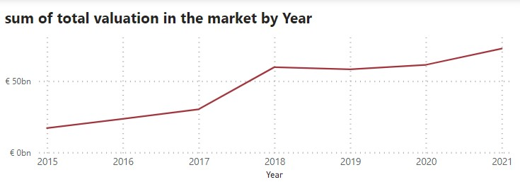
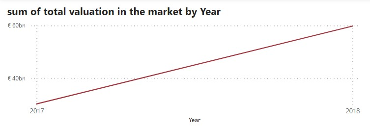
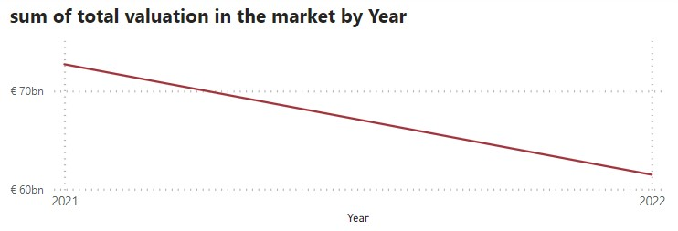
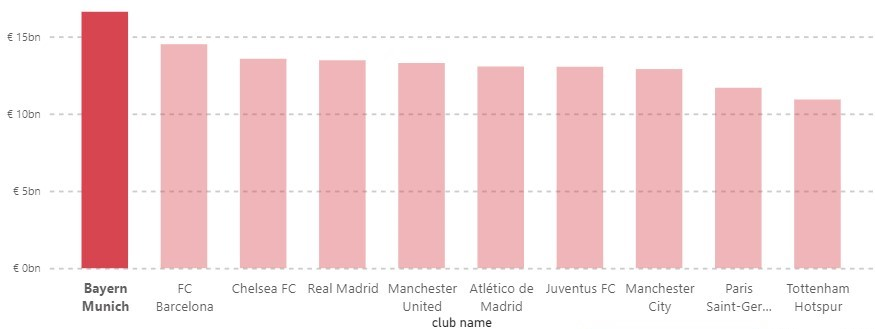
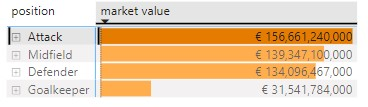
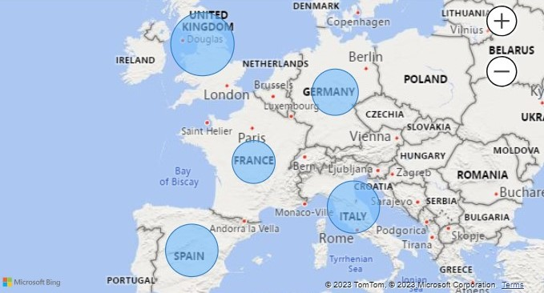

Footbal Transfer Market Analysis Using Power BI
This project aimed to enhance Power BI proficiency by analyzing football transfer market data across the top 5 European leagues from 2005 to 2022 and display it in dashbourd. The project involved data cleaning, transformation, modeling, and visualization to derive actionable insights. I took the dataset from Kaggle , This platform is known as sharing datasets by others.

Challenges and Questions Before the Project
- How to effectively analyze extensive football transfer market data from multiple leagues during nearly two decades?
- What trends and insights can we uncover without specific research questions to guide us?
Data Preparation and Modeling
- Cleaned and transformed a dataset with 5 tables (players, player_valuation, competitions, clubs, appearances).
- Established relationships and primary keys to create a unified dataset. 
Visualizations
- Created Line chart, matrix, map, Cards.
- Filtering by year, league, position amd team in interactive slicers.



Finding
- Noted a significant market value increase from 2015 to 2021, peaking in 2017-2018, followed by a decline in 2021-2022.
- Identified Bayern Munich as the club with the highest market value.
- Recognized attacker positions as having the highest market value.
- Demonstrated the Premier League's(United Kingdom) highest market value.
  



Business Insights
- Positional Value: Acknowledge the premium value of attacker positions, assisting clubs in strategic player recruitment.
- League Dominance: Recognize the financial prominence of the Premier League, drawing attention from potential investors and advertisers.
- Commercial Attraction: Recognize the Premier League's financial strength, making it an attractive option for investors and advertisers.